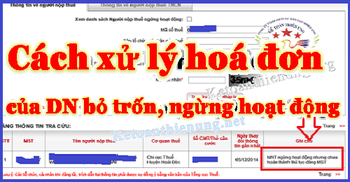

Hướng dẫn cách xử lý hóa đơn doanh nghiệp bỏ trốn, mua hàng của công ty bỏ trốn; Cách kiểm tra hóa đơn của doanh nghiệp bỏ trốn, ngừng hoạt động, bị đóng MST, công ty ma...
Nhiều doanh nghiệp đặt câu hỏi: Mua hàng hoá, dịch vụ của Doanh nghiệp bỏ trốn, ngừng hoạt động, bị đóng MST, cưỡng chế hoá đơn... -> Vậy những hoá đơn đó phải xử lý như thế nào? Bài viết này Kế toán Diệu Tâm xin trích các văn bản quy định về vấn đề đó, để các bạn tham khảo:
-------------------------------------------------------------------------------------
Câu hỏi:
- Hỏi: Tổng cục Thuế nhận được đơn thư kiến nghị của doanh nghiệp tư nhân Nguyễn Thị Lang về việc không được khấu trừ hoặc hoàn thuế GTGT đầu vào đối với những hóa đơn mua vào của doanh nghiệp bỏ trốn. Về việc này, Tổng cục Thuế có ý kiến như sau:
Trả lời:
Trường hợp khi phát hiện những hóa đơn đầu vào của DNTN Nguyễn Thị Lang là hóa đơn của những doanh nghiệp bán hàng đã bỏ trốn khỏi địa điểm kinh doanh thì Cục Thuế phải thông báo ngay cho cơ quan thuế các địa phương; đồng thời thông báo cho cơ quan pháp luật biết để có biện pháp xử lý.
- Nếu hóa đơn phát sinh trước ngày doanh nghiệp bán hàng bỏ trốn thì Cục Thuế phải kiểm tra xem xét, đối chiếu với hoạt động kinh doanh của doanh nghiệp để xác định có hàng hóa thực tế mua hay mua bán hóa đơn khống để xử lý vi phạm.
-> Trường hợp hóa đơn nêu trên là đúng thực tế có mua hàng, hàng hóa mua vào có nhập kho, được hạch toán kế toán trên sổ sách đầy đủ, đúng quy định thì chấp nhận được khấu trừ, hoàn thuế và tính vào chi phí khi xác định thu nhập chịu thuế.
- Nếu hóa đơn phát sinh sau ngày doanh nghiệp bán hàng bỏ trốn thì doanh nghiệp không được khấu trừ thuế GTGT đầu vào và không được tính vào chi phí khi xác định thu nhập chịu thuế./.
(Nguồn: mof.gov.vn)
-------------------------------------------------------------------
Công văn số 11805/CT-TTHT ngày 31/12/2014 của Cục Thuế TP. HCM
- Trường hợp của Công ty theo trình bày, có thuê xe ô tô của Công ty TNHH Thương mại Dịch vụ xuất nhập khẩu Á Việt (gọi tắt là Công ty Á Việt) để lãnh đạo đi công tác và đã thanh toán tiền mặt, Công ty Á Việt xuất giao cho Công ty hóa đơn ký hiệu AV/11P số 0000037 ngày 06/6/2013 và Công ty đã kê khai thuế. Tuy nhiên, theo công văn số 80/CCT-TB-BKD ngày 17/4/2013 của Chi cục Thuế Quận Bình Thạnh (cơ quan thuế quản lý trực tiếp Công ty Á Việt) thì Công ty Á Việt đã bỏ địa điểm kinh doanh như vậy hóa đơn trên được lập sau ngày cơ quan thuế thông báo bỏ trốn được xác định là hóa đơn bất hợp pháp, Công ty không được kê khai khấu trừ thuế GTGT đầu vào và không được tính vào chi phí được trừ khi xác định thu nhập chịu thuế TNDN.
-----------------------------------------------------------------
Về khấu trừ, hoàn thuế GTGT đối với những doanh nghiệp có mua hàng hóa, sử dụng hóa đơn đầu vào trực tiếp của doanh nghiệp và doanh nghiệp trung gian ngừng kinh doanh, bỏ trốn khỏi địa điểm kinh doanh có dấu hiệu mua bán hóa đơn bất hợp pháp nhưng chưa có kết luận chính thức của cơ quan thuế hoặc các cơ quan chức năng (bao gồm cả trường hợp phát hiện dấu hiệu vi phạm trước ngày Bộ Tài chính ban hành công văn số 7527/BTC-TCT) thực hiện theo hướng dẫn tại Công văn số 13706/BTC-TCT ngày 15/10/2013 và Công văn số 1752/BTC-CTC ngày 10/2/2014 của Bộ Tài chính: cụ thể đối với một số trường hợp thực hiện như sau:
- Nếu chưa kê khai khấu trừ thuế GTGT thì Cơ quan thuế thông báo bằng văn bản cho doanh nghiệp biết để tạm dừng kê khai khấu trừ thuế GTGT đối với các hóa đơn có dấu hiệu vi phạm pháp luật, chờ kết quả chính thức cơ quan có thẩm quyền.
-> Doanh nghiệp chỉ được thực hiện kê khai khấu trừ thuế GTGT đầu vào đối với các hóa đơn không có dấu hiệu vi phạm pháp luật.
- Nếu đã kê khai khấu trừ thuế GTGT thì cơ quan thuế thông báo bằng văn bản cho doanh nghiệp biết để kê khai điều chỉnh giảm số thuế GTGT đã khấu trừ.
- Trường hợp doanh nghiệp khẳng định việc mua bán hàng hóa và hóa đơn GTGT đầu vào sử dụng kê khai khấu trừ là đúng quy định thì doanh nghiệp phải cam kết chịu trách nhiệm trước pháp luật, đồng thời cơ quan thuế phải thực hiện thanh tra, kiểm tra tại doanh nghiệp để kết luận và xử lý vi phạm theo quy định. Trong quá trình thanh tra, kiểm tra phải thực hiện xác minh, đối chiếu với doanh nghiệp có quan hệ mua bán về một số nội dung.
+ Kiểm tra, xác minh về hàng hóa:
- Hợp đồng mua bán hàng hóa (nếu có);
- Hình thức giao nhận hàng hóa;
- Địa điểm giao nhận hàng hóa;
- Phương tiện vận chuyển hàng hóa;
- Chi phí vận chuyển hàng hóa;
- Chủ sở hữu hàng hóa và nguồn gốc hàng hóa (trước thời điểm giao nhận hàng hóa)
+ Kiểm tra xác minh về thanh toán:
- Ngân hàng giao dịch;
- Đối tượng nộp tiền vào tài khoản để giao dịch;
- Số lần thực hiện giao dịch;
- Hình thức thanh toán;
- Chứng từ thanh toán.
+ Kiểm tra xác minh về xuất khẩu hàng hóa:
- Tờ khai hải quan có xác nhận thực xuất của Cơ quan hải quan;
- Chứng từ thanh toán qua ngân hàng;
- Vận đơn (nếu có).
Qua thanh tra, kiểm tra nếu xác minh được việc mua bán hàng hóa là có thực và đúng với quy định của pháp luật thì giải quyết cho doanh nghiệp được khấu trừ, hoàn thuế GTGT;
- Đồng thời yêu cầu doanh nghiệp cam kết nếu trong các hồ sơ, tài liệu doanh nghiệp xuất trình cho cơ quan Thuế sau này phát hiện có sai phạm, doanh nghiệp phải chịu trách nhiệm trước pháp luật.
- Trường hợp phát hiện có dấu hiệu vi phạm pháp luật thuế, có dấu hiệu tội phạm thì lập và chuyển hồ sơ cho cơ quan có thẩm quyền để điều tra truy cứu trách nhiệm hình sự.
- Nếu việc tạm dừng khấu trừ thuế dẫn đến tăng số thuế GTGT phải nộp thì Cơ quan thuế có trách nhiệm tổng hợp, theo dõi các trường hợp này, chưa yêu cầu nộp và chưa tính phạt nộp chậm chờ kết luận chính thức của Cơ quan có thẩm quyền.
------------------------------------------------------------------------
KẾT LUẬN:1. Nếu hóa đơn đó phát sinh trước khi DN bỏ trốn (nếu chứng minh được là giao dịch thật, hồ sơ như quy định trên) thì được vẫn được khấu trừ thuế GTGT và tính vào chi phí được trừ khi tính thuế TNDN.
2. Nếu phát sinh sau khi DN bỏ trốn thì không được khấu trừ thuế GTGT và không được đưa vào chi phí.
- Nếu chưa kê khai thì không được kê khai
- Nếu đã kê khai thì phải kê khai điều chỉnh giảm thuế GTGT được khấu trừ và điều chỉnh lại tờ khai quyết toán thuế TNDN (Nhập vào chi tiêu B4 trên tờ khai quyết toán thuế TNDN)
Ngoài ra: Nếu DN không chứng minh được là có giao dịch thật (ví dụ: Mua bán hóa đơn) -> Thì bên mua ngoài việc không được khấu trừ thuế GTGT đầu vào và không được đưa vào chi phí -> Còn bị phạt thêm tội sử dụng hóa đơn bất hợp pháp (Mức phạt từ 20tr- 50tr đồng).
CẦN NHỚ: Trước khi nhận 1 hóa đơn GTGT đầu vào các bạn kế toán nên kiểm tra xem hóa đơn đó có hợp pháp hay không nhé, bằng cách truy cập vào webste: tracuuhoadon.gdt.gov.vn
Chi tiết xem tại đây: Cách kiểm tra hóa đơn GTGT hợp pháp hay không
--------------------------------------------------------------------
Xử lý hóa đơn bị cưỡng chế Không còn giá trị sử dụng:
Theo Công văn 2775/TCT-CS ngày 13/7/2018 của Tổng cục Thuế quy định:
Căn cứ các quy định trên, trường hợp người bán sử dụng hóa đơn trong thời gian cơ quan thuế có Quyết định về việc áp dụng cưỡng chế bằng biện pháp thông báo hóa đơn không còn giá trị sử dụng hoặc Thông báo về việc người nộp thuế không hoạt động tại địa chỉ đã đăng ký còn hiệu lực là hành vi sử dụng hóa đơn bất hợp pháp; Cơ quan thuế thực hiện xử lý như sau:
- Xử phạt đối với người mua: Người mua hàng bị xử phạt vi phạm hành chính về hành vi sử dụng hóa đơn bất hợp pháp, không được kê khai khấu trừ thuế GTGT và tính chi phí hợp lý khi xác định thu nhập chịu thuế thu nhập doanh nghiệp.
- Xử phạt đối với người bán: Trường hợp người bán sử dụng nhiều số hóa đơn bất hợp pháp thì khi bị phát hiện người bán bị xử phạt về hành vi sử dụng hóa đơn bất hợp pháp và có tình tiết tăng nặng do vi phạm trong thời gian đang chấp hành quyết định áp dụng biện pháp xử lý vi phạm hành chính của cơ quan thuế.
Xem thêm: Mức phạt sử dụng hóa đơn bất hợp pháp
------------------------------------------------------------------------------------------
Theo Công văn 410/TCT-KK ngày 27/01/2016 của Tổng cục Thuế
1. Về xử lý vi phạm đối với hành vi sử dụng hóa đơn bất hợp pháp:
- Về xử lý vi phạm đối với hành vi sử dụng hóa đơn bất hợp pháp đề nghị Cục Thuế thực hiện theo đúng hướng dẫn tại khoản 5 Điều 38 ; khoản 2 Điều 39 Nghị định 109/2013/NĐ-CP ngày 24/09/2013 của Chính phủ quy định xử phạt vi phạm hành chính trong lĩnh vực quản lý giá, phí, lệ phí, hóa đơn và khoản 5 Điều 11; khoản 2 Điều 12 Thông tư số 10/2014/TT-BTC ngày 17/1/2014 của Bộ Tài chính hướng dẫn xử phạt vi phạm hành chính về hóa đơn. Tuy nhiên, Tổng cục Thuế ghi nhận kiến nghị của Cục Thuế tỉnh Quảng Ngãi tại công văn số 2008/CT-KTNB ngày 22/10/2015 để nghiên cứu, đề xuất sửa đổi, bổ sung các quy định liên quan phù hợp với thực tế quản lý thuế.
2. Về việc áp dụng các biện pháp khắc phục hậu quả đối với hóa đơn sử dụng trong thời gian cơ quan thuế áp dụng biện pháp cưỡng chế nợ thuế bằng biện pháp thông báo hóa đơn không có giá trị sử dụng.
Trường hợp, người nộp thuế sử dụng hóa đơn trong thời gian cơ quan thuế có Quyết định cưỡng chế nợ thuế bằng hình thức thông báo hóa đơn không còn giá trị sử dụng là hành vi sử dụng hóa đơn bất hợp pháp, cơ quan thuế thực hiện truy thu số thuế phát sinh (nếu có) do sử dụng hóa đơn bất hợp pháp.
Các hóa đơn nêu trên không có giá trị sử dụng.
Đơn vị bán hàng và mua hàng bị xử phạt vi phạm hành chính về hành vi sử dụng hóa đơn bất hợp pháp.
Đơn vị mua hàng không được kê khai khấu trừ thuế GTGT và tính chi phí hợp lý khi xác định thu nhập chịu thuế TNDN.
-> Bên bán hàng và bên mua hàng phải lập biên bản thu hồi các hóa đơn đã lập sai quy định.
Sau khi Quyết định cưỡng chế nợ thuế hết hiệu lực thi hành hoặc bị bãi bỏ, qua xác minh cơ quan thuế xác định thực tế có hoạt động mua bán hàng hóa, dịch vụ thì cơ quan thuế hướng dẫn đơn vị bán hàng xuất hoá đơn, căn cứ các hóa đơn này đơn vị bán hàng, mua hàng của Công ty thực hiện kê khai thuế theo quy định.
3. Về việc kê khai, tính thuế trong thời gian cưỡng chế hóa đơn
Trường hợp trong thời gian cơ quan thuế ban hành Quyết định cưỡng chế nợ thuế bằng hình thức thông báo hóa đơn không còn giá trị sử dụng không thuộc trường hợp không phải kê khai theo quy định tại khoản c, Điều 10 Thông tư số 156/2013/TT-BTC ngày 06/11/2013 của Bộ Tài chính.
-> Do đó người nộp thuế vẫn phải kê khai thuế theo quy định.
- Tuy nhiên, Tổng cục Thuế ghi nhận kiến nghị của Cục Thuế tỉnh Quảng Ngãi tại công văn số 2008/CT-KTNB ngày 22/10/2015 để nghiên cứu, đề xuất sửa đổi, bổ sung các quy định liên quan phù hợp với thực tế quản lý thuế.
1. Về xử lý vi phạm đối với hành vi sử dụng hóa đơn bất hợp pháp:
- Về xử lý vi phạm đối với hành vi sử dụng hóa đơn bất hợp pháp đề nghị Cục Thuế thực hiện theo đúng hướng dẫn tại khoản 5 Điều 38 ; khoản 2 Điều 39 Nghị định 109/2013/NĐ-CP ngày 24/09/2013 của Chính phủ quy định xử phạt vi phạm hành chính trong lĩnh vực quản lý giá, phí, lệ phí, hóa đơn và khoản 5 Điều 11; khoản 2 Điều 12 Thông tư số 10/2014/TT-BTC ngày 17/1/2014 của Bộ Tài chính hướng dẫn xử phạt vi phạm hành chính về hóa đơn. Tuy nhiên, Tổng cục Thuế ghi nhận kiến nghị của Cục Thuế tỉnh Quảng Ngãi tại công văn số 2008/CT-KTNB ngày 22/10/2015 để nghiên cứu, đề xuất sửa đổi, bổ sung các quy định liên quan phù hợp với thực tế quản lý thuế.
2. Về việc áp dụng các biện pháp khắc phục hậu quả đối với hóa đơn sử dụng trong thời gian cơ quan thuế áp dụng biện pháp cưỡng chế nợ thuế bằng biện pháp thông báo hóa đơn không có giá trị sử dụng.
Trường hợp, người nộp thuế sử dụng hóa đơn trong thời gian cơ quan thuế có Quyết định cưỡng chế nợ thuế bằng hình thức thông báo hóa đơn không còn giá trị sử dụng là hành vi sử dụng hóa đơn bất hợp pháp, cơ quan thuế thực hiện truy thu số thuế phát sinh (nếu có) do sử dụng hóa đơn bất hợp pháp.
Các hóa đơn nêu trên không có giá trị sử dụng.
Đơn vị bán hàng và mua hàng bị xử phạt vi phạm hành chính về hành vi sử dụng hóa đơn bất hợp pháp.
Đơn vị mua hàng không được kê khai khấu trừ thuế GTGT và tính chi phí hợp lý khi xác định thu nhập chịu thuế TNDN.
-> Bên bán hàng và bên mua hàng phải lập biên bản thu hồi các hóa đơn đã lập sai quy định.
Sau khi Quyết định cưỡng chế nợ thuế hết hiệu lực thi hành hoặc bị bãi bỏ, qua xác minh cơ quan thuế xác định thực tế có hoạt động mua bán hàng hóa, dịch vụ thì cơ quan thuế hướng dẫn đơn vị bán hàng xuất hoá đơn, căn cứ các hóa đơn này đơn vị bán hàng, mua hàng của Công ty thực hiện kê khai thuế theo quy định.
3. Về việc kê khai, tính thuế trong thời gian cưỡng chế hóa đơn
Trường hợp trong thời gian cơ quan thuế ban hành Quyết định cưỡng chế nợ thuế bằng hình thức thông báo hóa đơn không còn giá trị sử dụng không thuộc trường hợp không phải kê khai theo quy định tại khoản c, Điều 10 Thông tư số 156/2013/TT-BTC ngày 06/11/2013 của Bộ Tài chính.
-> Do đó người nộp thuế vẫn phải kê khai thuế theo quy định.
- Tuy nhiên, Tổng cục Thuế ghi nhận kiến nghị của Cục Thuế tỉnh Quảng Ngãi tại công văn số 2008/CT-KTNB ngày 22/10/2015 để nghiên cứu, đề xuất sửa đổi, bổ sung các quy định liên quan phù hợp với thực tế quản lý thuế.
---------------------------------------------------------------------------------
Chú ý:
- Bài viết trên đây là hướng dẫn đối với bên mua (tức là DN đi mua hàng hoá, dịch vụ của doanh nghiệp bỏ trốn, bị đóng MST...).
-> Còn đối với bên bán (tức là bị đóng MST nhưng vẫn xuất hoá đơn) -> Thì cách xử lý các bạn xem tại đây nhé: Xử lý hoá đơn bị cưỡng chế đóng mã số thuế.
-----------------------------------------------------------------
Kế toán Diệu Tâm xin chúc các bạn làm tốt công việc kế toán!
Bạn muốn học làm kế toán tổng hợp - Thuế thực tế (Tính thuế, kê khai thuế, hạch toán sổ sách, cân đối, xác định chi phí được trừ - không được trừ, lên Báo cáo tài chính, Quyết toán thuế TNCN, TNDN cuối năm ...
- > Có thể tham gia Lớp học thực hành kế toán thực tế.
--------------------------------------------------------------------------------------------------------
Bạn muốn học làm kế toán tổng hợp - Thuế thực tế (Tính thuế, kê khai thuế, hạch toán sổ sách, cân đối, xác định chi phí được trừ - không được trừ, lên Báo cáo tài chính, Quyết toán thuế TNCN, TNDN cuối năm ...
- > Có thể tham gia Lớp học thực hành kế toán thực tế.
--------------------------------------------------------------------------------------------------------
